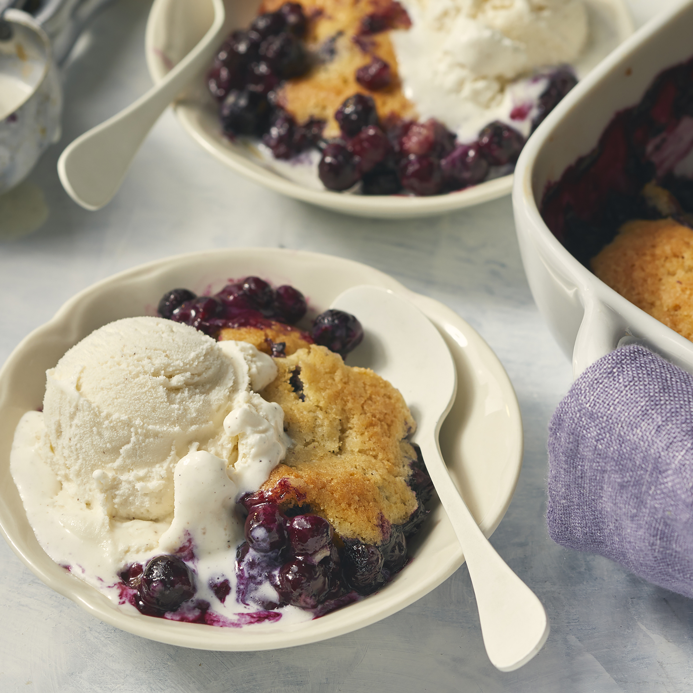

Blueberry Cobbler
This blueberry cobbler recipe works great with all types of fruit and is an excellent light
dessert that isn't too sweet! Serve with whipped cream or vanilla ice cream.

Ingredients
- 3 cups fresh blueberries
- 1/3 cup orange juice
- 3 tablespoons white sugar
- 2/3 cup all-purpose flour/li>
- 1/4 teaspoon baking powder
- 1 pinch salt
- 1/2 cup butter, softened
- 1/2 cup white sugar
- 1 egg
- 1/2 teaspoon vanilla extract
Directions
- Preheat the oven to 375 degrees F (190 degrees C).
- Mix blueberries, orange juice, and 3 tablespoons sugar in an 8-inch square baking dish.
- Mix flour, baking powder, and salt in a small bowl.
- Cream butter and 1/2 cup sugar in a large bowl until light and fluffy.
Beat in egg and vanilla. Gradually add flour mixture, stirring just until ingredients are combined.
- Drop spoonfuls of batter over the blueberry mixture, covering as much filling as possible.
- Bake in the preheated oven until topping is golden brown and filling bubbles, 35 to 40 minutes.
Return to Home Page